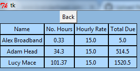

For my computer science course work I decided to produce a care management system that helps manage and keep track of carers and clients for an in-house elderly care agency.
I was inspired to do this after having spent a large portion of my summer working for a care agency where I had to use software that serve4d the same fundamentals as the one I decided to create. The experience was fun and allowed me to learn a lot more about programming and designing and breaking up big programs into smaller modules.
My course work can be broken down into five main features these are:
The database is a foundational feature of the system. It is necessary as it stores all the data that the other components need access to in order to operate correctly.
For example, the rota creator uses the database to produce a list of all the clients and carers so that the user can easily create their rotas by having access to a list of all clients and carers. The database also stores values such as position and wage which is used in the finance feature to calculate the amounts that are due to each carer.
Additional features of the database include the ability to add and remove clients and carers, as well as the ability to scroll through the table, which avoids cluttering the screen with too many record entries.
During my work at the care agency, I found that designing and creating rotas was incredibly difficult and tedious. The rota had to serve all the clients that required care but also had to give each carer enough hours to work so that they could get paid enough. This meant juggling all the schedules of the different carers and would cause issues when a carer was taking the day off or when a new carer was hired. It was also difficult as you had to know all the carers and clients and had to make sure that you never assigned a carer to be in two places at once, or that they had enough time to travel between clients.
The main focus behind the rota generator is to provide a utility which helps to ease and make the process of creating the rota more robust, efficient and effective.
The last feature to showcase is the finance payroll generator. This is a simple tool that can be used to mass produce that payroll data using the hourly wage of a carer, and the number of hours they work in a particular rota. The tool is used to quickly produce the payroll which can then be forwarded to a chartered accountant who can then use the data to complete remuneration. This helps as it speeds up the process, as instead of having to calculate the amounts due by hand, it can be done all on the computer. A computer also doesn't make mistakes (as long as my code works as I think it does haha) so it is also more secure and robust.
